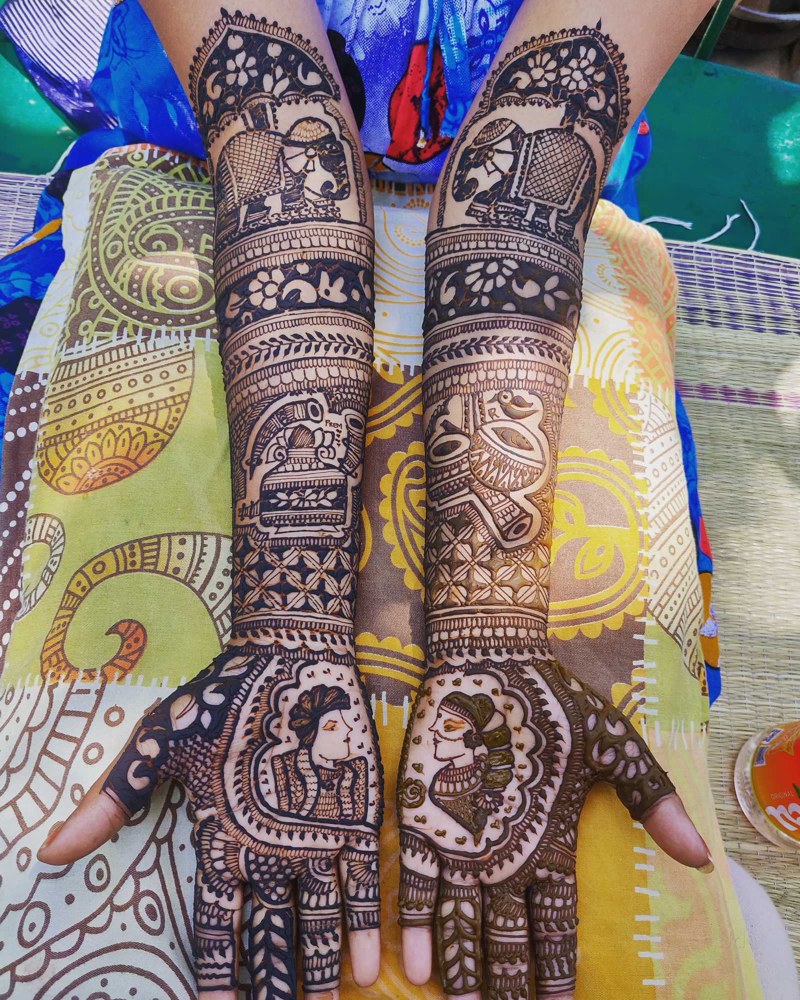
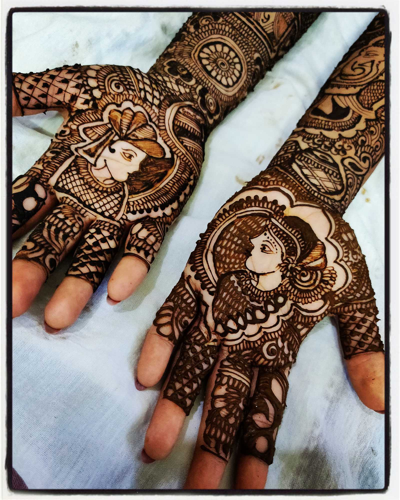
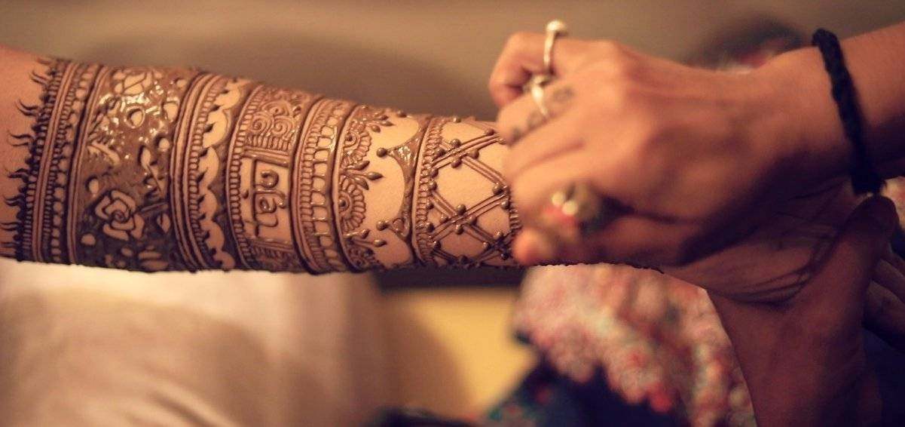
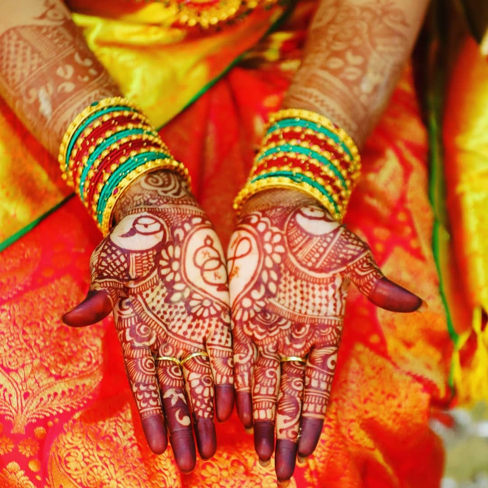

Home
Greetings! Welcome to Poo Mehendi Designs. We provide different types of elegant Mehendi like Bridal, Arabic, Indo Arabic, Portrait, Floral, Traditional and Henna Tattoos. Check out our designs section for a collection of various designs provided.
A little on the Art of Mehendi

Mehendi is a form of body art originating in ancient India, in which decorative designs are created on a person's body, using a paste, created from the powdered dry leaves of the henna plant (Lawsonia inermis). Dating back to ancient India, mehendi is still a popular form of body art among the women of the Indian subcontinent, Africa and the Middle East.
The Tradition

Mehndi is a ceremonial art form which originated in the ancient Indian subcontinent. It is typically applied during weddings - for Muslim and Hindu brides. In Rajasthan, the grooms are given designs that are often as elaborate as those for brides. In Assam, apart from marriage, it is broadly used by unmarried women during Rongali bihu.
Muslims in Afghanistan also started to use it as an indication of coming of age. In the Middle East and Africa, it is common for women to apply henna to their fingernails and toenails and to their hands.
The Process

Henna paste is usually applied to the skin using a plastic cone, a paintbrush or a stick. After about 15–20 minutes, the mud will dry and begin to crack, and during this time, a mixture of lemon juice and white sugar can be applied over the henna design to remoisten the henna mud so that the henna will stain darker. The painted area is then wrapped with tissue, plastic, or medical tape to lock in body heat, creating a more intense colour on the skin. The wrap (not a traditional method), is worn for two to six hours, or sometimes overnight, and then removed.
When first removed, the henna design is pale to dark orange in colour and gradually darkens through oxidation, over the course of 24 to 72 hours. The final color is reddish brown and can last anywhere from one to three weeks depending on the quality and type of henna paste applied, as well as where it was applied on the body (thicker skin stains darker and longer than thin skin). Moisturizing with natural oils, such as olive, sesame seed, or coconut, will also help extend the lifetime of the stain. Skin exfoliation causes the henna tattoo to fade.
In Weddings

A henna party is a tradition held before a wedding in many Middle Eastern and North African cultures. Henna parties were often held in the house that the bride was going to live in, and the guests included girls and women from the bride and groom's side of the family. The bride and all of her guests wore embroidered dresses called "bindalli". In addition to this, the bride also wore a red veil that covered her face.
According to Hindu tradition, the ceremony is mainly held at the bride's house or at a banquet hall on the eve of the marriage ceremony or few days before the marriage. Generally, the bride and groom attend the event together and on the occasion, a professional mehndi artist or a relative applies mehndi to the bride's hands and feet. The designs are very intricate. Often hidden within the mehndi pattern, the name or initials of the groom are applied. The event generally has a celebratory festival feel to it with the women dancing and singing traditional songs and the girls wearing vivid colors such as hot pink and yellow, often if the bride to be wishes to tease her future groom she will make him wear purple.